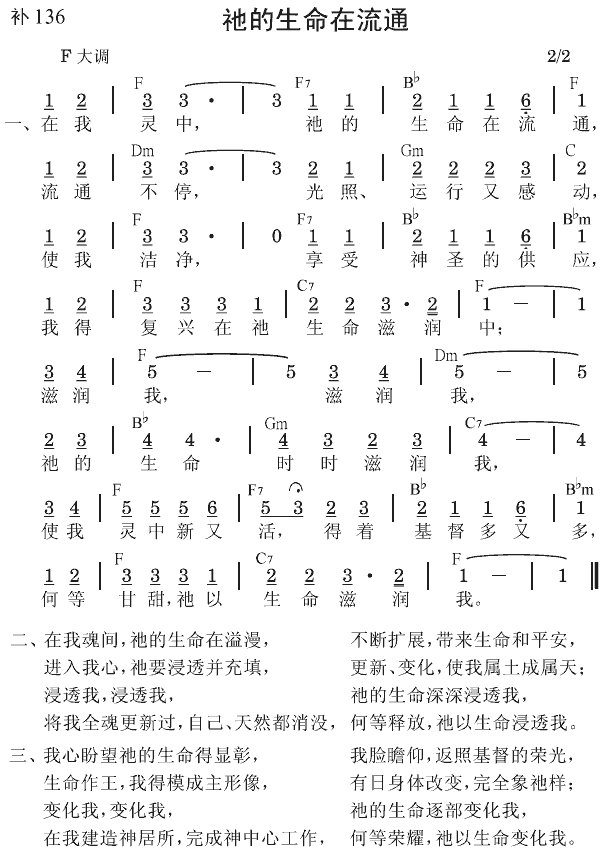

约壹1:2 这生命已经显现出来，我们也看见过，现在又作见证，将原与父同在，且显现与我们那永远的生命传与你们。
罗8:2 因为生命之灵的律，在基督耶稣里已经释放了我。
永远的生命
永远的生命不仅在时间上是永远的，在品质上也是永远的。这生命在其范围上也是永远的。所以，永远一辞指三件事：时间、空间和品质。就时间的元素说，这生命要持续到永远。就空间、范围说，这生命是广大、无限的。就品质说，永远的生命是完美、完全、毫无瑕疵、短缺的。永远生命的范围或领域包含整个宇宙。永远的生命是如此广大，包括了整个生命的领域。凡在生命的领域里的，都包含在这永远的生命里。然而，我们人的生命却非常不同。我们的生命不仅短暂，也很有限。但永远的生命既非短暂，也非有限；反而在时间上是永远长存的，在空间上是无限的。不仅如此，我们的生命有许多瑕疵、短缺；但神圣的生命，永远的生命，却没有瑕疵，也没有短缺。
是不能毁坏的
永远的生命是不能毁坏的生命（来七16）。这生命是一切都不能毁坏，都不能消除的。这是无穷尽地生命，是永远、神圣、非受造的生命，也是经过死亡和阴间之试验的复活生命（徒二24，启一18）。撒但和他的跟从者以为，借着将基督钉十字架，已经把这生命了结了。然而，钉十字架却成了最好的机会，让这生命繁增、繁殖。因为这生命是不受限制的，所以它绝不能被征服、折服或毁坏。
作为神所拣选之人的享受
父是永远生命的源头，子从父并同父显现出来，成为永远生命的彰显，给父所拣选的人有分并享受。我们该把永远生命的这些方面，当作属灵大餐中一道道的菜来享受，而不是想要分析。永远的生命是神的生命，是神的儿子，且在永远里与父同在（《约翰一书生命读经》三九至四二页）。
神圣的生命分赐到人的三部分里
罗马八章启示，神圣的生命要分赐到人的三部分里。二节上半说到，在基督耶稣里生命之灵的律。六节下半说，心思置于灵，乃是生命。十节说，基督若在我们里面，身体是死的，灵却是生命。然后十一节说，那叫耶稣从死人中复活者的灵，必借着祂住在我们里面的灵，赐生命给我们必死的身体。因此，二节说到神圣的生命，十节说我们的灵是生命，六节说我们的心思能成为生命，十一节说甚至我们的身体也可以得着生命。八节说到神，九节说到神的灵和基督的灵，十节说到基督。这些经文给我们看见，三一神要分赐到人的三部分里。
生命之灵
二节说到生命之灵。“生命之灵”一辞中，生命与灵是同位语，实际上的意思是那灵就是生命。在圣经里有好些这样的辞。圣经说“神的灵”，意思是灵就是神；圣经说“神的生命”，意思是生命就是神；圣经说 “del基督的灵”，意思是灵就是基督；圣经说“神的爱”，意思是爱就是神。
这就像电流。事实上，电流本身就是电，不是与电分开的东西，乃是活动的电本身。电流通并活动时，就是电流。电流可比作生命之灵。生命之灵意思是那灵就是生命。那灵是活动的生命，活动的三一神。
分赐到我们的灵里
这样一个神圣的生命首先分赐到我们的灵里。罗马八章十节说，基督既在我们里面，我们的灵就是生命。这是因为基督自己是这生命，而这生命在我们的灵里，所以我们的灵是生命。这是非常强的点。十节不是说，基督既在我们里面，生命就在我们里面；乃是说，我们的灵是生命。今天，我们重生的灵乃是生命。
分赐到我们的心思里
六节说，心思置于灵，就是生命。不仅我们的灵是生命，甚至我们的心思也能成为生命；但这心思必须置于灵。这就是说，这心思必须被灵漫溢、浸透并注入，成为心思的灵。至终，灵成为我们心思的灵。这是以弗所四章二十三节所提起的。因为我们的心思置于灵，我们的灵就浸透我们的心思，并使我们的心思成为灵的心思。至终，我们的灵成为我们心思的灵。这灵是调和的灵，是我们的灵与基督这赐生命的灵调和。
因为我们的心思与我们的灵是一，与我们的灵联结、联合，被我们的灵浸透并注入，所以我们的心思也是生命。这样的心思能尽功用，将生命服事给别人。借着我们天然的心思，我们无法将生命服事给别人；这心思不是生命。但我们的心思与我们的灵联合，并且被我们那是生命的灵所浸透，这时我们的心思也成为生命。
分赐到我们的身体里
罗马八章十一节说，那叫耶稣基督从死人中复活之神的灵，借着住在我们里面的灵，赐生命给我们必死的身体─我们正在死的身体。这节的“必死”一辞，不仅含示死的思想，也含示软弱的思想。必死的身体就是软弱的身体，正在死的身体。罗马七章称我们堕落的身体为“那属这死的身体”（24）。甚至这样软弱、正死、必死、属死的身体，也能得着生命。
到目前为止，我们能看见八章二节所提神圣的生命，在十节分授或分赐到我们的灵里，并在六节扩展到我们的心思里，然后在十一节分赐到我们必死的身体里。因此，神圣的生命要分赐到我们这人的三部分里 （《生命的基本功课》一二〇至一二三、一二五至一二六、一二八页）。
参读：《约翰一书生命读经》第四篇；《生命的基本功课》第十三课。
